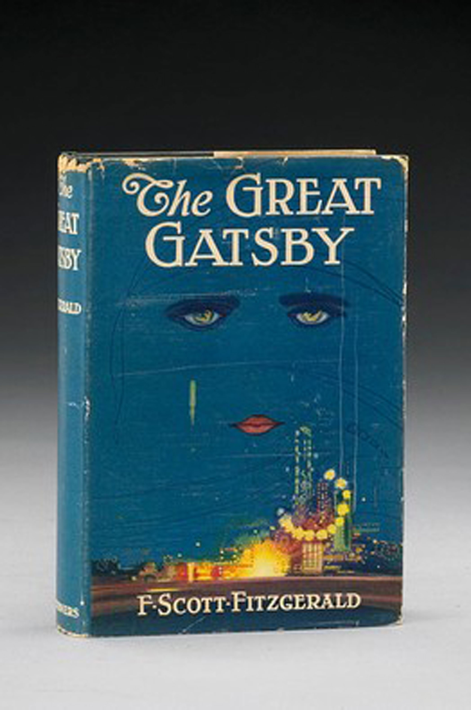

From ancient Egyptian papyrus scrolls to scrollable 21st-century e-books, a book can come in many different formats. However, in some ways, it seems like the more things change, the more they stay the same. In the same way that early printed books were painstakingly illuminated to look more like medieval books, today’s e-books use e-paper technology to mimic the look of a printed page. Even the hardcover books we’re familiar with today are direct descendants of the ancient codex.
While the first codices enclosed bound papers between wooden covers (the word codex means block of wood in Latin), contemporary hardcover book covers are usually made of cardboard sheathed in cloth, paper, or leather. The printed pages of the book are either sewn or glued to the cover. Until the early 1800s, most books were sold unbound. A buyer would purchase a sheath of printed papers that would be bound either by the bookseller or by a commissioned bindery. British publisher William Pickering is considered the first publisher to issue books in uniform cloth bindings in 1820. About a decade later, dust jackets, the detachable outer covers that sheathe most hardback books today, arrived on the scene. Dust jackets were initially meant only as a protective covering for the binding, but soon they became a place where designers could create a colorful and distinctive cover for a book.
Figure 3.9
Original dust jackets are especially important for book collectors—a first edition of F. Scott Fitzgerald’s The Great Gatsby without the dust jacket sells for around $3000; with the dust jacket intact, it can go for more than $30,000.
The durability of hardcover books makes them attractive to both authors and book purchasers. However, the competitive economics of today’s publishing industry means that some books are never issued in hardcover. Because hardcover books are more expensive to produce and almost always cost more than their paperback equivalents, publishers tend to reserve the format for books that they expect will sell well.
Based on projected sales, publishers must decide how big of a print run to order for a new hardcover book. A book’s print runAll the copies of a book created in one setup of the printing apparatus. refers to all the copies made in one setup of the printing apparatus. A failed book may only have one, while a successful book may have 50 or more printings. Figuring out how many copies of a book to print is an inexact science, as publishers must essentially guess how well a book will sell. There is no standard size for a print run. The U.K. edition of the first Harry Potter book had an initial print run of only 500 copies; the U.S. print run of the seventh and final book in the series was a record-breaking 12 million. When an initial print run is sold out, the book is either reprinted (these copies are considered a second printing) or is considered out of print. The contemporary publishing industry will often issue a first-run hardcover printing, followed by subsequent paperback editions.
Inexpensive paper-bound books have been around for centuries in formats like the chapbook, the British penny dreadful, and the American dime novel. However, the hardcover book, whether as an ancient codex or its contemporary equivalent, was the dominant format in the book world for thousands of years. The introduction of a new format in the 1930s, the paperback, was considered revolutionary. The so-called paperback revolution began during the Great Depression, when paperbacks were marketed as inexpensive alternatives to hardcover editions. Penguin Books, Ltd., the first majorly successful paperback publishing company, kept prices low by ordering large print runs and selling books in nontraditional retailers, such as Woolworth’s drugstores. Penguin also broke the traditional paperback mold by avoiding pulp fiction entertainment novels and instead printing books that were both cheap and intellectually stimulating. Donald Porter Geddes, the editor of Pocket Books, the first paperback publishing house in the United States, spelled out this new approach to bookselling in 1944: “The best books apparently have the greatest appeal to the greatest number of people … the larger American public need no longer suffer from the delusion that it is intellectually inferior, or, from a literary point of view, lacking in any aspect in good taste, judgment, and appetite.”Matthew Ogle, “The Paperback Revolution,” CRC Studio, 2003, http://www.crcstudio.org/paperbacks/revolution.php. By 1960, when paperback books first outsold hardcovers, these early paperback innovators were proved right.
While paperback publishing first issued only reprints of books that had already been issued in hardcover, paperback originalsA book with an initial print run in paperback instead of hardcover., books that had their initial print run as a paperback edition, emerged in the 1950s. Paperback originals were another step in helping to remove the stigma from the paperback book. In 1999, Jhumpa Lahiri’s The Interpreter of Maladies was the first paperback original to win the Pulitzer Prize for fiction.
Today’s books published in paperback are traditionally divided into two broad categories: mass-market paperbacks and trade paperbacks. Mass-market paperbacksA paperback format that is generally small and inexpensively bound. are small, inexpensive editions that are sometimes issued after a hardcover edition, although many genre novels are printed only in mass-market paperback editions. Trade paperbacksA paperback format that is generally of higher quality; a paperback version of a hardcover edition, with identical pagination and size. are larger and generally of better quality. They’re often printed on higher-quality paper (sometimes acid-free paper). If the trade paperback follows a hardcover release, the paperback will be the same size as the hardcover and will have the same pagination and page layout as the hardcover edition.
Traditionally, hardcover books have been seen as more prestigious than paperbacks, though that stereotype may be beginning to change. In recent years, some publishers of literary fiction were seeing 50 to 75 percent of the hardcover books they shipped to bookstores returned to them unsold. As a response, certain publishers opted to release books with uncertain sales potential as trade paperbacks, bypassing the hardcover format entirely. “Getting somebody to spend $22 on a book by an author who they’ve never heard of is hard, but getting them to spend $13.95 on a paperback is much easier,” Random House’s Jane von Mehren told The New York Times in 2006.Edward Wyatt, “Literary Novels Going Straight to Paperback,” New York Times, March 22, 2006, Books section. Some publishers are concerned that book reviewers don’t take trade paperback editions as seriously, but that too may be slowly changing. Another publishing strategy is to release hardcover and trade paperback editions simultaneously rather than delaying the paperback edition for several months (or even years, in the case of exceptionally popular books). Such a technique is intended to drive up sales, taking advantage of initial publicity to capture readers who may be unwilling to pay the full hardcover price for a book.
Whatever the concerns that publishers may have about issuing paperbacks, the format is still dominant in the U.S. publishing industry. According to the American Association of Publishers, 35 percent of the books sold in 2009 were trade paperbacks; 35 percent hardcovers; 21 percent mass market paperbacks; 2 percent audio books; 2 percent e-books; and 5 percent “other.”“Some Facts About the Book Publishing Industry,” Eco-Libris, http://www.ecolibris.net/bookpublish.asp.
The hardcover book’s expensive, durable binding seemed to say that it was an object intended for posterity. If paperback books disrupted the traditional concept of books by making them cheaper and more portable, then the e-book is poised to cause an even greater change in how readers interact with a text. E-books, also known as electronic or digital books, are the digital media equivalent of printed books. That is, they are books read on the screen of an electronic device, whether a cell phone, personal computer, or dedicated e-book reader.
E-books differ from their print equivalents in many significant ways. For one, there’s no physical production cost, which means that e-books are generally less expensive than traditional books. There’s also no cost to store or transport e-books. Because an e-book’s publisher doesn’t need to order a set print run, a text issued as an e-book doesn’t ever have to go out of print. E-books also appeal to readers who want instant gratification. Instead of having to travel to a brick-and-mortar bookstore or wait for a delivery, a reader can download an e-book in a matter of minutes.
Early e-books were mostly technical manuals or digitized versions of works in the public domain. As the Internet took off and as electronic devices became increasingly mobile, book publishers began to issue digital editions of their works. In the first decade of the 21st century, various companies began issuing software and hardware platforms for electronic books, each competing for dominance in this emerging market.
Although e-books make up only a small percentage of total book sales, that number is growing. Dan Brown’s The Lost Symbol, the follow-up to his massively popular novel The Da Vinci Code, sold more copies as a Kindle e-book than as a hardcover in the first few days after its September 2009 release. However, e-book successes have led to a threat that faces many kinds of digital content: online piracy. Only a few days after its initial release, Brown’s novel had been illegally downloaded more than 100,000 times. Some authors and publishers are concerned that Internet users expect free content and will find a way around spending money on e-books. American novelist Sherman Alexie recently voiced some of these anxieties, “With the open-source culture on the Internet, the idea of ownership—of artistic ownership—goes away.”Matt Frisch, “Digital Piracy Hits the E-book Industry,” CNN, January 1, 2010, http://www.cnn.com/2010/TECH/01/01/ebook.piracy/index.html. Other prominent authors have reacted to the e-book in various ways. In 2000, Stephen King published his novella Riding the Bullet as a digital file that could only be read on a computer; in contrast, J. K. Rowling has stated that the Harry Potter novels won’t ever be released as e-books.John B. McHugh, “J.K. Rowling Refuses E-books for Potter,” USA Today, June 14, 2005, http://www.usatoday.com/life/books/news/2005-06-14-rowling-refuses-ebooks_x.htm. However, piracy has struck Rowling’s novels as well. Every Harry Potter novel is available in pirated form, either as a scanned copy or one that was manually typed out by fans.
Another concern with e-books is the possibility of digital decayThe breakdown of data stored in digital form.. All an e-book is, after all, is a collection of data saved to a disk. It turns out that digital formats tend to decay much faster than their physical counterparts.Kurt D. Bollacker, “Avoiding a Digital Dark Age,” American Scientist 98, no. 3 (2010): 106. The swift turnover of digital devices is another concern; the possibility exists that a book bought on a Kindle device in 2010 will be not be compatible with an equivalent device in 2035 or even 2015.
E-book sales still make up a small part of the overall book market, 3 to 5 percent by most estimates, but their sales increased by 177 percent in 2009. The New Yorker cites a projection that e-books will someday account for between 25 and 50 percent of all book sales.Ken Auletta, “Publish or Perish,” Annals of Communication, New Yorker, April 26, 2010. And with newer models of e-book readers, such as the iPad, boasting full-color screens and the ability to embed web links and video in a book’s text, e-books may fundamentally reshape how people read in the future.
Create a list of the three book formats mentioned in this section, and then answer the following questions: